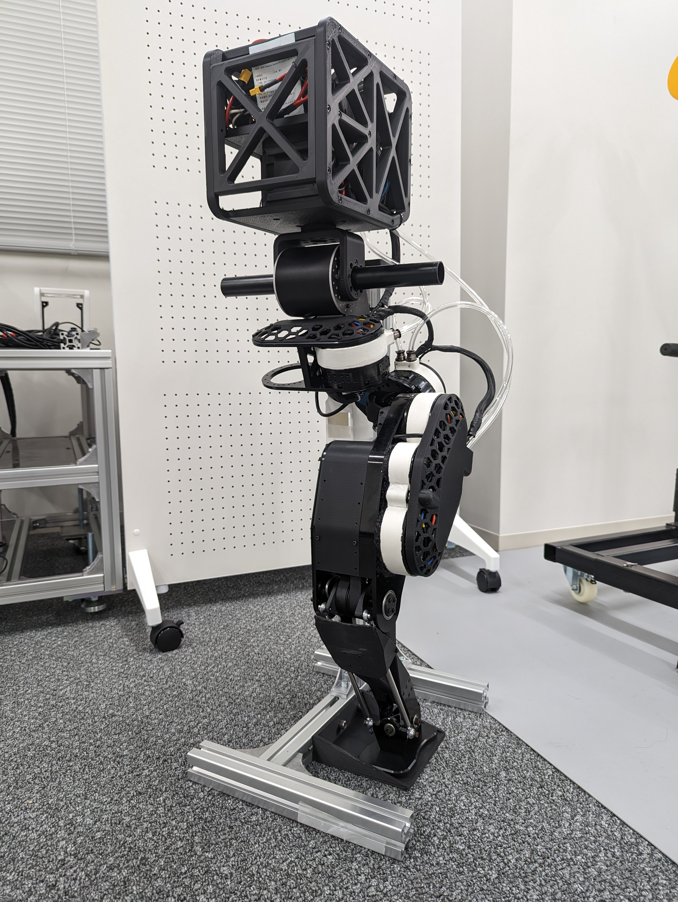
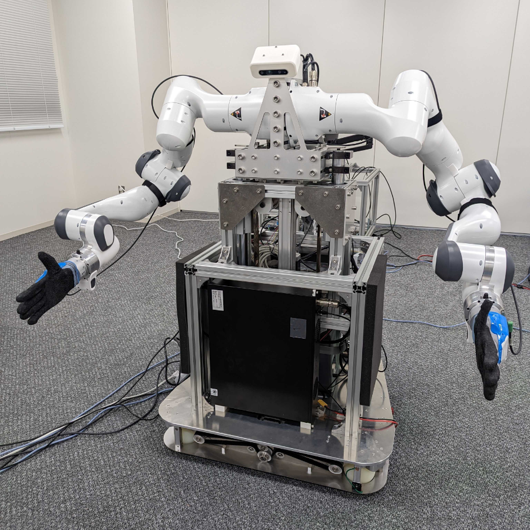
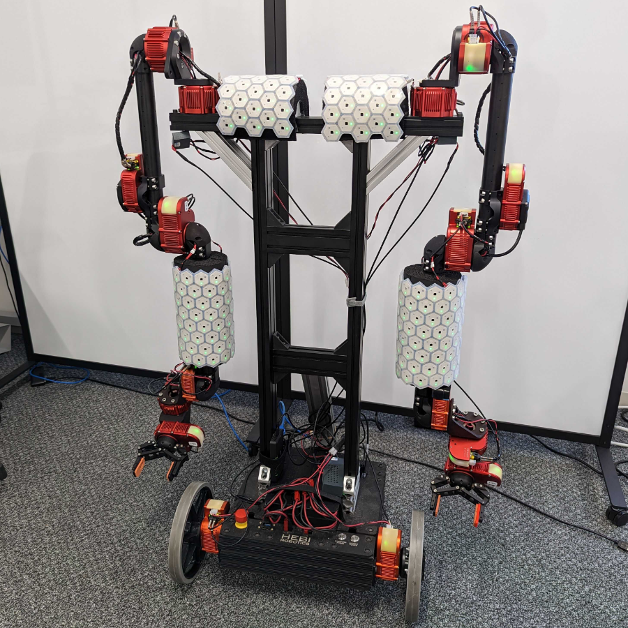
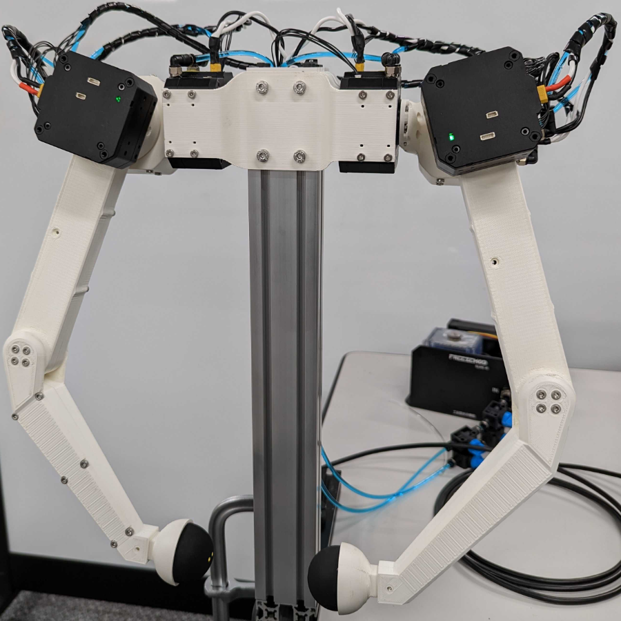

Takanori Jin
About
Publications
Work
Search
Previous
Next
Calican leg
Panda dual-arm
Hebi dual-arm
Koala dual-arm
Calican leg

Robot constructed with liquid-cooled custom-designed actuators.
Experimental video.
Panda dual-arm

The torso has a linear joint with a range of motion of 250mm.
Teleoperation test video.
Hebi dual-arm

HEBI robotics components and e-skin.
Robot control system with skin-machine interface.
Koala dual-arm

Simple dual-arm robot using westwood robotics actuators.
Bilateral test.
Search
From here you can search these documents. Enter your search terms below.
Keyboard Shortcuts
Keys
Action
?
Open this help
n
Next page
p
Previous page
s
Search